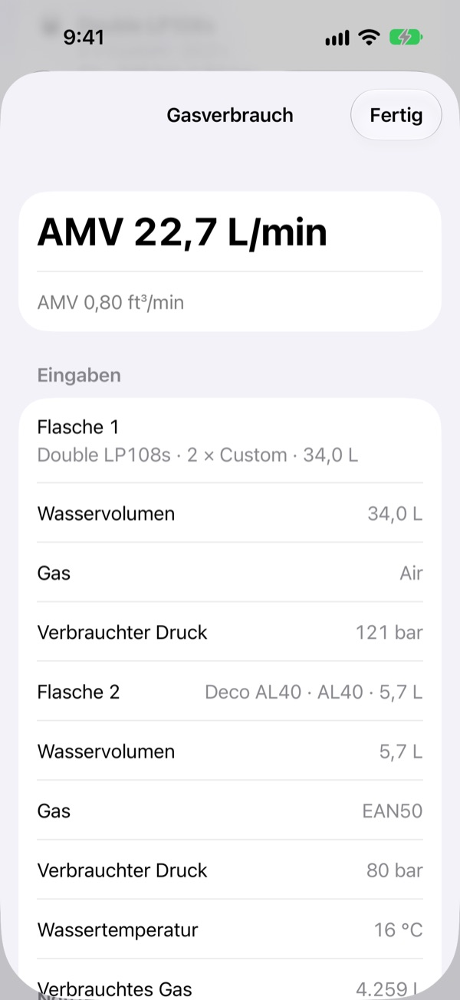

Zuerst jedes Gerät aktualisieren
Viele Probleme verschwinden, wenn auf jedem Gerät der neueste Build läuft. Öffnen Sie TestFlight auf jedem iPhone, iPad und Mac, den Sie nutzen, und installieren Sie alle Updates. Ein älterer Build sendet keine Änderungen mehr, bis er aktualisiert ist, und meldet Aktualisieren Sie Thermocline, um weiter zu synchronisieren. Ihre Änderungen bleiben erhalten und werden nach dem Update gesendet.
Downloads von einem Tauchcomputer
Der Computer wird nicht gefunden
- Wecken Sie den Computer auf und versetzen Sie ihn in seinen Bluetooth-Modus (Shearwater: Menu → Bluetooth). Er bleibt nur etwa zwei Minuten darin.
- Halten Sie ihn nah an das iPhone, iPad oder den Mac.
- Shearwater-Computer verbinden sich wieder mit dem zuletzt verwendeten Gerät. Wenn Ihr Telefon oder ein anderer Mac in der Nähe ist, schalten Sie Bluetooth auf diesem Gerät aus und versuchen Sie es dann erneut.
- Prüfen Sie, ob Bluetooth eingeschaltet ist und Thermocline es verwenden darf (iPhone: Einstellungen → Thermocline; Mac: Systemeinstellungen → Datenschutz & Sicherheit → Bluetooth).
Es ist ein Predator oder Petrel 1, und das iPhone sieht ihn nicht
Diese nutzen älteres Bluetooth (Bluetooth Classic), das iPhones und iPads nicht verwenden können. Laden Sie sie auf dem Mac herunter (siehe die Anleitung) oder importieren Sie ihre Tauchgänge aus Shearwater Cloud oder einer UDDF-Datei.
Er verbindet sich, fragt aber nach einer PIN
Geben Sie den Code ein, der auf dem Display des Computers steht. Er wird nur beim ersten Mal gebraucht.
„Keine neuen Tauchgänge“
Nur Tauchgänge, die neuer als Ihr letzter Download sind, werden geholt. Wenn Sie einen Tauchgang gelöscht haben und ihn zurückmöchten, schalten Sie Jeden Tauchgang auf dem Computer herunterladen ein und laden Sie erneut herunter. Tauchgänge, die schon in Ihrem Logbuch sind, werden übersprungen.
Der Download hat mittendrin aufgehört
Wählen Sie Behalten, um die angekommenen Tauchgänge zu sichern, und laden Sie dann für den Rest erneut herunter. Wenn er immer wieder aufhört, wählen Sie Erneut versuchen nah am Computer und senden Sie das Download-Log.
Ein Kabel-Download schlägt auf dem Mac fehl
- Prüfen Sie, ob der Port zum Kabel passt: Die Liste zeigt, welche Art jeder Port ist, und warnt, wenn er nicht zum gewählten Modell passt.
- Ziehen Sie das Kabel ab und stecken Sie es wieder ein, und verwenden Sie dann die Aktualisieren-Taste, um erneut nach Kabeln zu suchen.
- Folgen Sie den Schritten unter Bevor Sie beginnen für Ihr Modell.
- Kabel-Downloads sind neu. Bitte senden Sie das Download-Log in jedem Fall.
Synchronisierung zwischen Geräten
Meine iPhone-App sagt, Thermocline ist jetzt eine App, oder ich sehe zwei Thermocline-Apps
Am 18. November 2026 wurden die Apps für iPhone, iPad, Mac und Apple Watch zu einer App mit einem Beta-Link. Die iPhone-App, die Sie vorher hatten, hilft Ihnen jetzt nur noch beim Umzug.
- Öffnen Sie die alte App. Wenn sie meldet, dass die Synchronisierung aus ist, tippen Sie auf „Mit iCloud synchronisieren“ einschalten und lassen Sie sie eine Minute geöffnet, oder tippen Sie auf Mein Logbuch als UDDF exportieren und sichern Sie die Datei.
- Tippen Sie auf Der neuen Beta beitreten oder öffnen Sie den Beta-Link auf Ihrem iPhone und installieren Sie die neue App. Sie steht neben der alten.
- Schalten Sie in der neuen App Profil → Mit iCloud synchronisieren ein. Ihre Tauchgänge, Tauchplätze, Ausrüstung und Einstellungen kommen zurück. Wenn Sie stattdessen exportiert haben, verwenden Sie Profil → Logbuchdatei importieren.
- Möglicherweise müssen Sie Ihren Tauchcomputer erneut koppeln und die Watch-App über die Watch-App auf Ihrem iPhone erneut installieren.
- Wenn die neue App dieselben Tauchgänge zeigt, löschen Sie die alte.
Auf einem Mac ändert sich nichts: Aktualisieren Sie die Mac-App wie gewohnt weiter.
Nach einer Synchronisierung fehlen Tauchgänge oder sind doppelt
- Ändern Sie noch nichts. Machen Sie auf jedem Gerät ein Bildschirmfoto vom Bereich Synchronisierung (iPhone: Profil → Synchronisierung; Mac: Thermocline → Einstellungen → Synchronisierung) und senden Sie es.
- Prüfen Sie, ob jedes Gerät den neuesten Build hat.
- Profil → Ihre Daten → Wiederherstellungspunkte kann Ihr Logbuch auf den Stand vor einem Import, einer Zusammenführung oder einer Löschung zurückbringen. Beim Wiederherstellen wird Ihr aktuelles Logbuch zuerst gesichert, sodass es sich rückgängig machen lässt.
Eine Änderung auf einem Gerät erscheint nicht auf dem anderen
- Prüfen Sie, ob Mit iCloud synchronisieren auf beiden eingeschaltet ist und beide mit demselben Apple Account angemeldet sind.
- Sehen Sie auf dem Gerät, auf dem Sie die Änderung gemacht haben, unter Wartet auf Senden nach und öffnen Sie die App auf beiden mit Empfang. Der Bereich Synchronisierung zeigt an, wann dieses Gerät und Ihre anderen übereinstimmen.
- Drücken Sie Jetzt synchronisieren.
„Nicht bei iCloud angemeldet“
Melden Sie sich in den Einstellungen des Geräts bei iCloud an. Bis dahin bleibt Ihr Logbuch sicher auf diesem Gerät und wird synchronisiert, sobald Sie angemeldet sind.
„Ihr iCloud-Speicher ist voll“
Ihr Logbuch ist auf dem Gerät sicher und wird synchronisiert, sobald Platz ist. Schaffen Sie etwas iCloud-Speicher frei oder schalten Sie iCloud-Speicher bei Tauchfotos sparen ein, damit Fotos nicht doppelt gespeichert werden.
„Ein anderes Gerät verwendet eine neuere Version“
Aktualisieren Sie Thermocline auf diesem Gerät in TestFlight. Ihre Änderungen sind hier sicher und werden nach dem Update gesendet.
Importe
Einige Tauchgänge oder Details sind nicht angekommen
Der Importbericht listet alles unter Nicht importiert und Bitte prüfen auf, jeweils mit dem Grund. Jedes Logbuch schreibt UDDF ein wenig anders, daher sind fehlende Werte normal und bleiben leer. Wenn etwas fehlt, das Sie erwartet haben, senden Sie den Bericht und, wenn möglich, die Datei.
Meine Ausrüstung, Fotos oder Tauchgangsarten aus MacDive fehlen
Der UDDF-Export von MacDive lässt diese weg. Importieren Sie für Ausrüstung, Tags und Tauchgangsarten sein XML darüber, und importieren Sie auf dem Mac für Fotos den MacDive-Ordner. Tauchgänge, die schon in Ihrem Logbuch sind, werden nicht doppelt hinzugefügt. Siehe Welche MacDive-Datei Sie verwenden sollten.
Nullzeit, ppO₂ oder CNS fehlt bei Tauchgängen aus MacDive
Die Tauchgangsseite zeigt die Nullzeit als „—“ und Deko als „Nicht aufgezeichnet“, oder beim ppO₂ steht „Aus Gas und Tiefe berechnet“. Der UDDF-Export von MacDive enthält Nullzeit, ppO₂ und CNS des Computers nicht. Sein Ordner hat kein Profil für Tauchgänge, die MacDive auf einem iPhone oder iPad heruntergeladen hat, weil es diese verschlüsselt speichert.
Importieren Sie zusätzlich das XML von MacDive: Es ergänzt, was fehlt, ohne Tauchgänge erneut hinzuzufügen. Siehe Welche MacDive-Datei Sie verwenden sollten.
Geht beim Wechsel zwischen Dateien oder Apps etwas verloren?
- Ihre ursprünglichen Dateien werden nie verändert. Bewahren Sie Ihre MacDive-Exporte auf, und behalten Sie MacDive selbst, bis Sie ein paar Tauchgänge verglichen haben.
- Ein zweiter Import ergänzt, er ersetzt nicht. Tauchgänge, die schon in Ihrem Logbuch sind, werden zugeordnet und bekommen nur, was ihnen fehlt, daher können Sie das XML nach dem UDDF importieren oder den Ordner nach einem der beiden.
- Sie können zurück. Ein Wiederherstellungspunkt namens Vor einem Import wird vor jedem Import von mehr als einem Tauchgang gesichert (Profil → Ihre Daten → Wiederherstellungspunkte auf dem iPhone, Einstellungen → Wiederherstellungspunkte auf dem Mac). Auf dem Mac macht auch Import widerrufen … im Bericht den Import rückgängig.
- Thermocline verlassen: Sein UDDF-Export ist der vollständige. Er enthält Nullzeit, ppO₂ und CNS des Computers über jeden Tauchgang, Ausrüstung, Tags, Tauchgangsarten und Videolinks. Fotos sind in keiner Exportdatei enthalten.
Importierte Tauchgänge haben kein Gas
Die Datei hat nicht angegeben, welches Gas verwendet wurde. Diese Tauchgänge warten unter Zu bestätigen, damit Sie es festlegen können.
Ich habe die falsche Datei importiert
Verwenden Sie auf dem Mac Import widerrufen … im Importbericht. Auf beiden Geräten wird vor jedem Import von mehr als einem Tauchgang ein Wiederherstellungspunkt namens Vor einem Import gesichert.
Eine Garmin-Datei lässt sich nicht importieren
- „Das ist eine ZIP-Datei“: Original exportieren in Garmin Connect liefert eine .zip-Datei. Entpacken Sie sie und wählen Sie dann die .fit-Datei darin.
- „Dies ist keine Garmin-FIT-Datei“: Die Datei stammt nicht von einer Garmin-Uhr, oder nur ihr Name endet auf .fit. Verwenden Sie die Datei aus dem Ordner GARMIN → Activity der Uhr oder Original exportieren.
- „Garmin-Dateien enthalten keinen Tauchgang“: Läufe, Spaziergänge, Einstellungen und Gesundheitsdateien werden übersprungen. Nur Tauchgänge kommen herein.
- „Scheinen abgeschnitten oder beschädigt“: Die Datei endet mittendrin, oft durch ein Kopieren oder einen Download, der nicht fertig wurde. Was gelesen werden konnte, wird angezeigt; kopieren Sie die Datei erneut von der Uhr und importieren Sie sie noch einmal, um den Rest zu bekommen. Tauchgänge, die schon in Ihrem Logbuch sind, werden übersprungen.
- Eine Garmin-Datei zusammen mit einer anderen Logbuchdatei auswählen ist nicht in einem Schritt möglich: Importieren Sie die Logbuchdatei, dann die Garmin-Dateien.
Ein Garmin-Tauchgang bittet mich, seine Flaschen zu prüfen
Bei mehr als einem Flaschensender gibt die Garmin-Datei nicht an, an welchem Gas jeder hing, daher wurden sie den Flaschen des Tauchgangs der Reihe nach zugeordnet. Öffnen Sie den Gasbereich des Tauchgangs und prüfen Sie, ob jeder Druck bei der richtigen Flasche steht.
Die Zeit eines Garmin-Tauchgangs weicht um eine Stunde ab
Die Zeit stammt von der eingestellten Uhrzeit der Uhr. Wenn diese nicht auf die Ortszeit am Tauchort gestellt war, wird der Tauchgang mit der Zeit der Uhr angezeigt. Bearbeiten Sie die Zeit des Tauchgangs, oder stellen Sie vor der nächsten Reise die Zeitzone der Uhr ein.
Ein Strömungstauchgang hat den falschen Tauchplatz
Ein Tauchgang wird dem näheren von Einstiegs- und Auftauchort zugeordnet, was bei einem Strömungstauchgang meist der Einstieg ist. Wenn der falsche oder gar kein Tauchplatz zugeordnet wurde, wählen Sie den Tauchplatz beim Tauchgang und tragen Sie weitere Wracks, an denen Sie vorbeigekommen sind, in die Notizen ein.
Gasverbrauch und AMV
Ein AMV-Wert sieht falsch aus
Tippen oder klicken Sie daneben auf Wie?. Es zeigt jeden Eingabewert: die Flasche und ihr Wasservolumen, Drücke, Temperatur, die Realgas-Korrektur, Zeit und Tiefe. Die übliche Ursache ist eine falsche Flaschengröße; korrigieren Sie sie in Ausrüstung. Senden Sie ein Bildschirmfoto des Bildschirms Wie?, wenn es danach immer noch falsch aussieht.

Es gibt kein AMV, nur eine Meldung
- Flaschengröße eintragen, um das AMV zu sehen: Wählen Sie das Modell der Flasche oder geben Sie ihre Größe ein.
- Anfangs- und Enddruck eintragen, um das AMV zu sehen: Es gibt keinen Sender, also tragen Sie sie bei der Flasche ein.
- Das AMV benötigt ein Tiefenprofil: Von Hand geloggte Tauchgänge ohne Profil haben kein AMV.
- Tauchgänge mit Kreislaufgerät bekommen keinen AMV-Wert.
Das AMV zählt nur eine Flasche
Bei einem Tauchgang mit mehreren Gasen hat nur die Flasche mit dem Sender Drücke. Tragen Sie Anfangs- und Enddruck bei der anderen Flasche ein, dann umfasst das AMV das gesamte Gas.
Gasverbrauch in der Übersicht sagt, kein Tauchgang hat eine Flaschengröße
Gasverbrauch mittelt nur Tauchgänge mit einer Flaschengröße sowie Anfangs- und Enddruck. Tauchgänge aus dem UDDF von MacDive haben keine Flaschengröße, weil seine Größen keine Wasservolumen sind; wenn Sie das XML darüber importieren, werden sie ergänzt (siehe Welche MacDive-Datei Sie verwenden sollten). Andernfalls legen Sie die Flasche bei Ihren Tauchgängen fest (wählen Sie ihr Modell oder ein Ausrüstungsset) und tragen Sie Drücke ein, wo Sie sie haben. Unter dem Wert gibt Gasverbrauch an, wie viele Tauchgänge nicht gezählt wurden.

Fotos
Ein Foto erscheint nicht auf meinem anderen Gerät
Mit eingeschaltetem iCloud-Speicher bei Tauchfotos sparen behält ein Foto seine Kopie, bis Ihr anderes Gerät es in iCloud-Fotos findet. Schalten Sie die Einstellung auf beiden Geräten ein, prüfen Sie, ob iCloud-Fotos auf beiden eingeschaltet ist, und geben Sie ihm Zeit zum Hochladen.
Videos wurden nicht hinzugefügt
Videos aus Ihrer Mediathek können nur verknüpft, nicht kopiert werden. Schalten Sie Synchronisierung → iCloud-Speicher bei Tauchfotos sparen ein und achten Sie darauf, dass das Video in iCloud-Fotos ist. Oder fügen Sie unter den Fotos des Tauchgangs einen YouTube- oder Vimeo-Link ein.
„Thermocline kann Ihre Fotos nicht lesen“
Der Zugriff auf Fotos wurde verweigert, daher werden Fotos kopiert statt verknüpft. Um sie zu verknüpfen, erlauben Sie den Zugriff unter Einstellungen → Datenschutz & Sicherheit → Fotos → Thermocline.
Tauchplätze und die Apple Watch
Der vorgeschlagene Tauchplatz ist falsch, oder es gibt keinen
Wählen Sie einen anderen Tauchplatz, durchsuchen Sie die eingebauten Listen nach Namen oder markieren oder tippen Sie die Position selbst ein. Steinbrüche und Seen im Binnenland fehlen oft in öffentlichen Listen, daher kommen Ihre eigenen Tauchplätze ab dann in den Vorschlägen zuerst.
Thermocline ist nicht auf meiner Apple Watch
Die Watch-App kommt mit der iPhone-App aus TestFlight. Öffnen Sie auf Ihrem iPhone die Watch-App, suchen Sie Thermocline unter Verfügbare Apps und tippen Sie auf Installieren. Sie benötigt watchOS 11 oder neuer. Wenn Sie von der alten iPhone-App umgezogen sind, installieren Sie sie erneut: Die alte Watch-App gehört zur alten iPhone-App.
Die Uhr zeigt „Warten auf einen guten Fix“, und Stelle markieren bleibt grau
Eine Stelle wird nur aus einem Fix mit einer Genauigkeit von ±30 m gesichert, der weniger als 30 Sekunden alt ist, damit nie eine falsche Position in Ihr Logbuch gelangt. Bleiben Sie an der Oberfläche, mit der Uhr außerhalb des Wassers und freier Sicht zum Himmel, und geben Sie ihr eine Minute. Eine alte zwischengespeicherte Position wird ignoriert bedeutet, dass sie auf eine frische wartet. GPS funktioniert nicht unter Wasser: Markieren Sie die Stelle, bevor Sie abtauchen oder wenn Sie auftauchen.
„Der Ortungszugriff ist für Thermocline deaktiviert“ auf der Uhr
Öffnen Sie auf der Uhr Einstellungen → Datenschutz & Sicherheit → Ortungsdienste, schalten Sie die Ortungsdienste ein und erlauben Sie Thermocline den Zugriff beim Verwenden der App.
Eine auf der Watch markierte Stelle ist nicht auf dem iPhone erschienen
Öffnen Sie auf der Uhr Markierungen. Wartet auf Senden an iPhone bedeutet, dass das iPhone sie noch nicht bekommen hat: Halten Sie die Uhr in der Nähe Ihres iPhone und öffnen Sie Thermocline auf dem iPhone. An iPhone gesendet bedeutet, dass sie dort ist: Sehen Sie unter Logbuch → Zu bestätigen nach. Das iPhone schlägt die Stelle nach, wenn es online ist, daher wartet sie ohne Empfang mit wartet auf Empfang zum Nachschlagen.
Die Uhr hat nach dem Markieren keinen Tauchplatznamen gezeigt
Der Name kommt von Ihrem iPhone: Wenn es in der Nähe ist und Thermocline antworten kann, zeigt die Uhr unter der Stelle den Tauchplatz, den es vorschlagen würde, Ihren eigenen oder einen aus den Tauchplatzlisten, mit der Entfernung. Ist das iPhone außer Reichweite, nennt die Uhr Ihre eigenen Tauchplätze aus der Kopie, die Ihr iPhone auf ihr hinterlassen hat, aber nicht die aus den Tauchplatzlisten. Gibt es im Umkreis von etwa 1,5 km keinen Tauchplatz, wird die Stelle ohne Namen markiert. In jedem Fall wählen Sie den Tauchplatz auf dem iPhone, unter Logbuch → Zu bestätigen.
Der Name, den ich auf der Uhr gesprochen habe, wurde nicht gesichert
Der Name wird gesichert, wenn sich das Diktat oder die Tastatur schließt oder wenn Sie zurückgehen. Öffnen Sie Markierungen, tippen Sie auf die Stelle und prüfen Sie ihren Namen; tippen Sie auf Namen ändern, um es erneut zu versuchen. Wenn die Stelle schon gesendet wurde, folgt ihr der Name auf das iPhone.
Zeichnet die Uhr meine Tauchgänge auf?
Nein. Die Watch-App von Thermocline markiert nur Stellen an der Oberfläche. Ihre Tauchgänge kommen von Ihrem Tauchcomputer. Bei Garmin-Descent-Uhren importieren Sie deren .fit-Dateien: siehe Garmin Descent in der Anleitung.
Eine Stelle ist von der Uhr verschwunden
Das ist so vorgesehen. Eine Stelle verlässt die Uhr, sobald sie auf dem iPhone bestätigt oder verworfen wurde. Eine bestätigte Stelle ist ein Tauchplatz in Ihrem Logbuch und wird mit Ihren anderen Geräten synchronisiert.
Einen Bericht oder ein Download-Log senden
- Aus der App: Machen Sie ein Bildschirmfoto und verwenden Sie dann Beta-Feedback teilen in TestFlight. Es kommt mit angehängtem Build und Gerät an.
- Download-Log, iPhone: Tippen Sie auf dem Download-Bildschirm auf Download-Log und teilen Sie es dann. Es enthält nur Bluetooth- und Computermeldungen, keine Tauchdaten.
- Download-Log, Mac: Wählen Sie im Download-Fenster Download-Log …, dann Log speichern …, und hängen Sie die Datei an.
- E-Mail: brian@616labs.net, mit Ihrem Gerät, der Build-Nummer (in TestFlight angezeigt) und dem, was Sie erwartet haben.